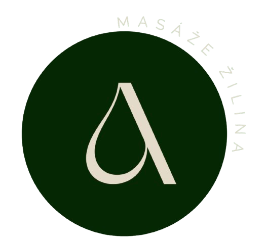
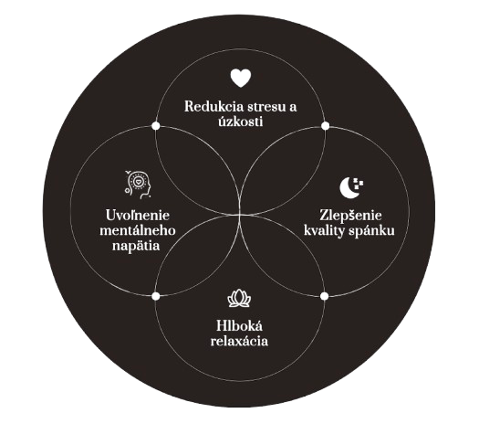

tvár, hlava, krk a dekolt

Tvoja prvá pomoc v stresových obdobiach a pri mentálnom preťažení.
Jemná masáž pomáha uvoľniť svaly v oblasti čela, spánkov, čeľuste, krku a ramien, kde sa najčastejšie hromadí stres. Prináša pocit hlbokého pokoja a reštart pre tvoju myseľ.
Masáž hlavy a spánkov pomáha zmierniť napätie spôsobené celodennou prácou za počítačom a stresovými bolesťami hlavy. Upokojuje nervový systém a prispieva ku kvalitnejšiemu spánku.
Podporuje cirkuláciu krvi, vďaka čomu sa pokožka lepšie okysličuje a vyživuje. Pleť po masáži pôsobí sviežejšie a zdravšie.
